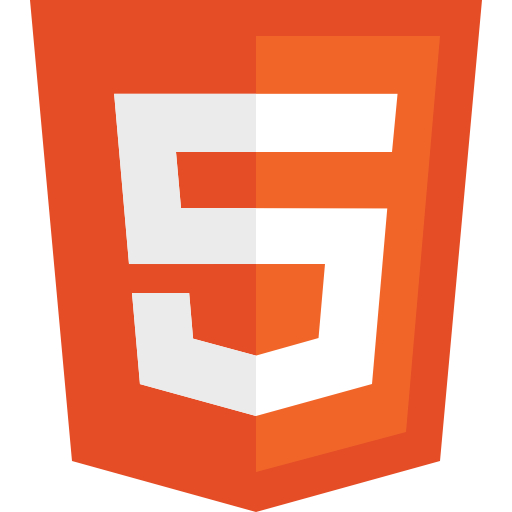
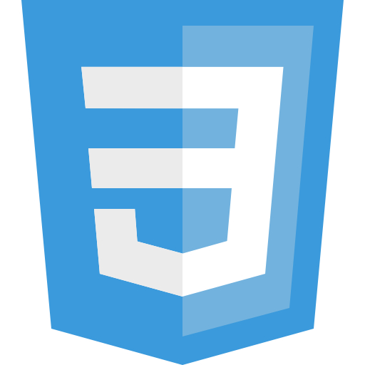

ウェブサイト制作・開発
WEBSON
ていねいなコミュニケーションをとり、依頼者の状況、要望を的確にとらえ、
最適なウェブサイト、施策を提案・構築します。
サービス内容
なんのためにウェブサイトをつくるのでしょうか。作りたいと思う人それぞれに、目的があるはずです。目的に応じた、ホームページ制作、運用、施策を提案します。
WEBSONでは、効率的、効果的に会議を進める技術であるホワイトボード・ミーティング®認定講師資格を持ったそんほんすが、お客様の状況をしっかりと効率よくききとります。（ホワイトボードがなくても大丈夫）
Web技術に明るくなくても大丈夫です。教員経験のあるそんほんすは、あなたの意識にあるキーワードから、適切に課題を導き出し、対応策をわかりやすくご説明いたします。
ホームページ制作、運用、リニューアル

SEO対策、SNS運用代行、コンサルティング

料金
以下に料金表を示します。基本的な総額を表示しています。 サブスクリプションによる契約など、お客様の状況に応じた契約が可能ですので、 お気軽にご相談ください。
| 無料プラン | 人気No.1初級プラン | 上級プラン |
|---|---|---|
| ¥0 | ¥5,000 | ¥8,000 |
| 申し込み | 申し込み | 申し込み |
| 保証なし | 保証1ヶ月 | 保証3ヶ月 |
スキル
-
 HTML
HTMLのルールにしたがって、サイトのメッセージを適切に構造化します。そうすることで、ユーザーが検索したときに上位に表示されるようにします。
-
 CSS
サイトのページを増やしたり、ちがう製作者に頼んだりしたいと思ったときに、困らないように設計します。
-

JavaScript
ウェブサイトにいろいろな動きを加えます。ユーザーの視線を誘導したり、知らせたい情報を強調したりします。
-
Wordpress
ブログを書くような形でコンテンツを更新できるようにします。既存のデザインから選んでサクッと構築することもできますし、オリジナルデザインをWordPressにして運用することもできます。
-

GatsbyJS
JAMstackという技術を使ったサイトを構築します。WordPress同様、ブログのようにコンテンツを更新できるサイトの制作もできます。サイトの表示がとても早いので、ユーザーの離脱率が下がったり、検索順位でも有利になったりします。
実績
-

GatsbyJS
JAMstackという技術を使ったサイトを構築します。WordPress同様、ブログのようにコンテンツを更新できるサイトの制作もできます。サイトの表示がとても早いので、ユーザーの離脱率が下がったり、検索順位でも有利になったりします。
-

GatsbyJS
JAMstackという技術を使ったサイトを構築します。WordPress同様、ブログのようにコンテンツを更新できるサイトの制作もできます。サイトの表示がとても早いので、ユーザーの離脱率が下がったり、検索順位でも有利になったりします。
私について
２０１９年春頃から本格的にプログラミングやウェブ制作の学習にとりくみはじめました。教員経験を通して培ってきたコミュニケーション力や課題解決力をウェブ制作事業によって社会に還元したいという思いが募り、現在副業でウェブ制作・開発にとりくんでいます。
もっと読む >>>